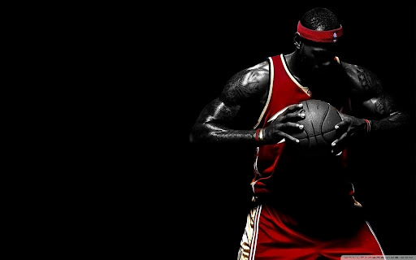
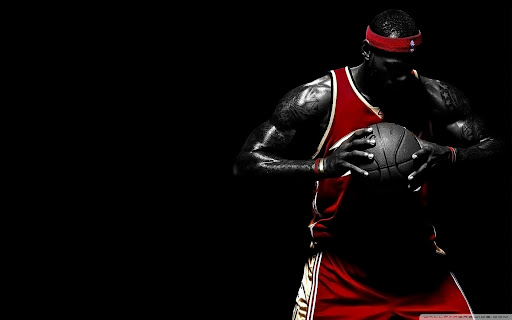

Kobe Bean Bryant (August 23, 1978 – January 26, 2020) was an American professional basketball player. He played his entire 20-year career in the National Basketball Association (NBA) with the Los Angeles Lakers. He entered the NBA directly from high school and won five NBA championships. Bryant was an 18-time All-Star, 15-time member of the All-NBA Team, 12-time member of the All-Defensive team, and the 2008 NBA Most Valuable Player (MVP). Widely regarded as one of the greatest basketball players of all time, he led the NBA in scoring during two seasons, ranks fourth on the league's all-time regular season scoring, and ranks fourth on the all-time postseason scoring list. Bryant was the first guard in NBA history to play at least 20 seasons.
By acclamation, Michael Jordan is the greatest basketball player of all time. Although, a summary of his basketball career and influence on the game inevitably fails to do it justice, as a phenomenal athlete with a unique combination of fundamental soundness, grace, speed, power, artistry, improvisational ability and an unquenchable competitive desire, Jordan single-handedly redefined the NBA superstar. Even contemporaneous superstars recognized the unparalleled position of Jordan. Magic Johnson said, “There’s Michael Jordan and then there is the rest of us.” Larry Bird, following a playoff game where Jordan dropped 63 points on the Boston Celtics in just his second season, appraisal of the young player was: “God disguised as Michael Jordan.”
.jpg) 

LeBron James was selected by the Cleveland Cavaliers with the first overall pick in the 2003 NBA draft. In 2010 he signed with Miami Heat. He was already a star by then. He along with Dwyane Wade and Chris Bosh won back to back Championships in from 2012 to 2013. He returned to Cleveland in 2014 and is currently playing for them. He was part of the Olympic team that won gold in 2012 London Olympics. James has started at small forward and power forward, but can also play the other three positions.